Bölgesel / Yerel
Belirli bir yöreyi temsil eden, coğrafi karakteri öne çıkaran bölgesel ve yerel üretici markalar.
Bölgesel / Yerel odaklı zeytinyağı markaları, benzer bölgeler ve ilgili zeytin çeşitleri. 98 marka listesi.
Bu Sayfadaki Markalar
Mutuna
Mut, Mersin merkezli yerel üretici. Erken hasat ve soğuk sıkım Mut zeytinyağı serileri bulunur....
Şarköy Çiftlik
Şarköy merkezli doğal ürünler markası. Coğrafi işaretli ve soğuk sıkım zeytinyağı ürünleriyle Trakya hattında dikkat çeker....
Aivalia
Aivalia zeytinyağlarını uygun koşullarda üretip tüm müşterilerimizin yüzde yüz zeytinyağının tadına varmalarını sağlıyoruz....
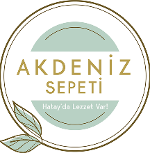
Bölgesel / YerelAKDENİZ SEPETİ
AKDENİZ SEPETİ, Hatay çizgisinde yerel üretim çizgisinde zeytinyağı sunan üretici olarak öne çıkar....
Ali Pekin
Yöresel, taze, lezzetli ve sağlıklı gıda ürünleri satış mağazası. Kalite Sertifikalı Zeytin, Zeytinyağı çeşitleri, Peynir çeşitleri ve sağlıklı gıda satışı...
Alpoliva
Alpoliva, yerel üretim çizgisinde zeytinyağı sunan üretici olarak dizine eklenmiştir....
Anıt Yağ
Anıt Yağ, yerel üretim çizgisinde zeytinyağı sunan üretici olarak dizine eklenmiştir....
Arslan Zeytinyağı
Antakya, Hatay merkezli üretici. Cam şişe, pet ve teneke ambalajlı natürel sızma serileri sunar....
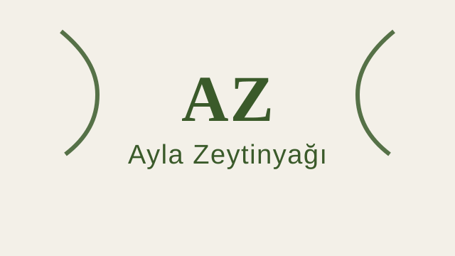
Bölgesel / YerelAyla Zeytinyağı
Ayvalık bölgesinin geleneksel zeytinyağı markası. Ayvalık çeşidi zeytinlerden soğuk sıkım natürel sızma zeytinyağı üretir....
Aysan
Aysan, yerel üretim çizgisinde zeytinyağı sunan üretici olarak dizine eklenmiştir....
Ayvaco
Ayvacık çevresinde üretim yapan yerel marka. Soğuk sıkım natürel sızma zeytinyağı çeşitleriyle bilinir....
Ayvalık Han
Ayvalık Han, Ayvalık, Balıkesir çizgisinde yerel üretim çizgisinde zeytinyağı sunan üretici olarak öne çıkar....
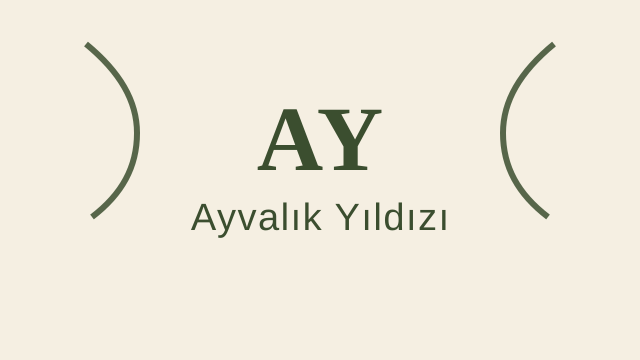
Bölgesel / YerelAyvalık Yıldızı
Ayvalık'ın meşhur zeytinlerinden üretilen bölgesel marka. Ayvalık zeytinyağının kendine has meyvemsi aromasını yansıtır....
Bazilika
Altınözü, Hatay merkezli yöresel üretici. Zeytin ve zeytinyağı ürünlerini Hatay köken vurgusuyla sunar....
Bereket
Güney bölgelerden zeytinyağı üreten marka. Hatay ve Mersin yöresi zeytinlerinden natürel sızma zeytinyağı üretir....
Buzey
Burhaniye çıkışlı natürel sızma ve soğuk sıkım zeytinyağları sunan yerel üretici....
Dalgıçoğlu
Edremit Körfezi çevresinde üretim yapan marka. Bölgesel zeytinyağı ürünleri sunar....
Datçam
Datça çıkışlı natüreli soğuk sıkım zeytinyağı serileri sunan yerel üretici....
Değirmenci
Ege bölgesinden taş baskı ve soğuk sıkım zeytinyağları sunan marka. Geleneksel üretim yöntemleri ile kaliteli natürel sızma zeytinyağı üretir....
Dino Ayvalık
Dino Ayvalık, Ayvalık, Balıkesir çizgisinde yerel üretim çizgisinde zeytinyağı sunan üretici olarak öne çıkar....
Durukaan
Durukaan, yerel üretim çizgisinde zeytinyağı sunan üretici olarak dizine eklenmiştir....
Ece'den Sofranıza
Hatay merkezli aile markası. El hasadı ve natürel sızma odaklı teneke ve şişe ürünler sunar....
Edremit Körfezi
Edremit Körfezi'nin eşsiz ikliminde yetişen zeytinlerden üretilen natürel sızma zeytinyağı. ZETAŞ olarak da bilinir....
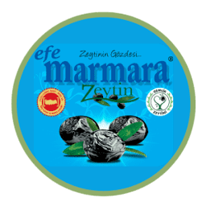
Bölgesel / YerelEfe Marmara
Bursa ve Marmara hattında Gemlik ile Trilye tipi zeytinlerden zeytin ve natürel sızma zeytinyağı üreten yerel marka....
Egemden
Ege bölgesinin doğal lezzetlerini sunan marka. Natürel sızma zeytinyağı ve zeytin ürünleri portföyü bulunur....
Egeo Norte
Egeo Norte, yerel üretim çizgisinde zeytinyağı sunan üretici olarak dizine eklenmiştir....
Femes
Femes, yerel üretim çizgisinde zeytinyağı sunan üretici olarak dizine eklenmiştir....
Fethi Çelik
Gemlik zeytini ve Gemlik zeytinyağına odaklanan, yöresel üretim geleneğini sürdüren köklü aile işletmesi....
Galia Garden
Galia Garden, yerel üretim çizgisinde zeytinyağı sunan üretici olarak dizine eklenmiştir....
Garbi Garden
Garbi Garden, yerel üretim çizgisinde zeytinyağı sunan üretici olarak dizine eklenmiştir....
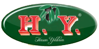
Bölgesel / YerelGemlik Zeytin Evi
Gemlik bölgesinde zeytin ve zeytinyağı ürünleri sunan yerel marka. Cam şişe ve teneke seçenekleriyle öne çıkar....
Gemlik Zeytincisi
Gemlik odaklı zeytin ve zeytinyağı üreticisi. Bölgesel kökeni öne çıkan natürel sızma ürünleri bulunur....
Gemlika
Gemlik zeytininden üretilen natürel sızma zeytinyağına odaklanan bölgesel marka....
Gülpınar
Gülpınar, yerel üretim çizgisinde zeytinyağı sunan üretici olarak dizine eklenmiştir....
Gümetepe
Ezine ve Çanakkale hattında zeytin ile natürel sızma zeytinyağı üreten yerel marka....
Halil Esen
Gemlik merkezli zeytin ve zeytinyağı üreticisi. Natürel sızma, soğuk sıkım ve farklı ambalaj seçenekleri sunar....
Hatay Tadında
Hatay yöresel ürünleri ve zeytinyağı satışı yapan yerel marka. Soğuk sıkım ve teneke zeytinyağı ürünleriyle öne çıkar....
Hektor's
Hektor's, yerel üretim çizgisinde zeytinyağı sunan üretici olarak dizine eklenmiştir....
Hemdem Via Ga
Hemdem Via Ga, yerel üretim çizgisinde zeytinyağı sunan üretici olarak dizine eklenmiştir....
Heraliv
Heraliv, yerel üretim çizgisinde zeytinyağı sunan üretici olarak dizine eklenmiştir....
İSKELE KOOPERATİFİ
İSKELE KOOPERATİFİ, Edremit, Balıkesir çizgisinde yerel üretim çizgisinde zeytinyağı sunan üretici olarak öne çıkar....
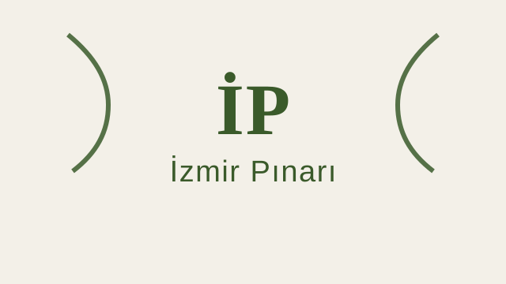
Bölgesel / Yerelİzmir Pınarı
İzmir bölgesinden kaliteli zeytinyağı üreten yerel marka. Ege zeytinlerinden soğuk sıkım natürel sızma zeytinyağı sunar....
Karadağ Zeytincilik
Karadağ Zeytincilik, Ayvalık, Balıkesir çizgisinde yerel üretim çizgisinde zeytinyağı sunan üretici olarak öne çıkar....
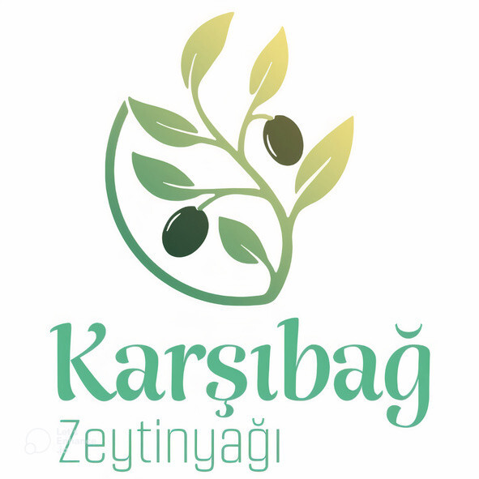
Bölgesel / YerelKarşıbağ
Mudanya yöresindeki yerel üreticilerden seçilen tepe zeytinleriyle soğuk sıkım natürel sızma zeytinyağı sunan yerel üretici....
Kege Food
Burhaniye merkezli natürel sızma zeytinyağı ve zeytin ürünleri geliştiren yerel üretici....
Koral Zeytin
Akhisar merkezli üretici. Zeytin ve zeytinyağı ürünlerinde yerel üretim odaklıdır....
Külahlı Zeytinyağı
Külahlı Zeytinyağı, yerel üretim çizgisinde zeytinyağı sunan üretici olarak dizine eklenmiştir....
Kürşat
Güneydoğu bölgesinden, özellikle Kilis ve Hatay zeytinlerinden üretim yapan marka. Halhalı ve Nizip zeytinlerinden kaliteli yağ üretir....
Levi Farm
Levi Farm, yerel üretim çizgisinde zeytinyağı sunan üretici olarak dizine eklenmiştir....
Macaroğlu
Mudanya Tirilye çıkışlı zeytin ve zeytinyağı çeşitleri sunan köklü yerel üretici....
Milas Zeytinyağları
Muğla'nın Milas ilçesinden üretim yapan yerel marka. Milas bölgesinin kendine has zeytin çeşitlerinden kaliteli yağ üretir....
Monterosso
Monterosso, yerel üretim çizgisinde zeytinyağı sunan üretici olarak dizine eklenmiştir....
MR Zeytin
Akhisar merkezli zeytin ve zeytinyağı üreticisi. Natürel sızma ürünleriyle öne çıkar....
Mut İncisi
Mut yöresinden üretim yapan bölgesel marka. Farklı hacimlerde natürel sızma ve yemeklik seriler sunar....
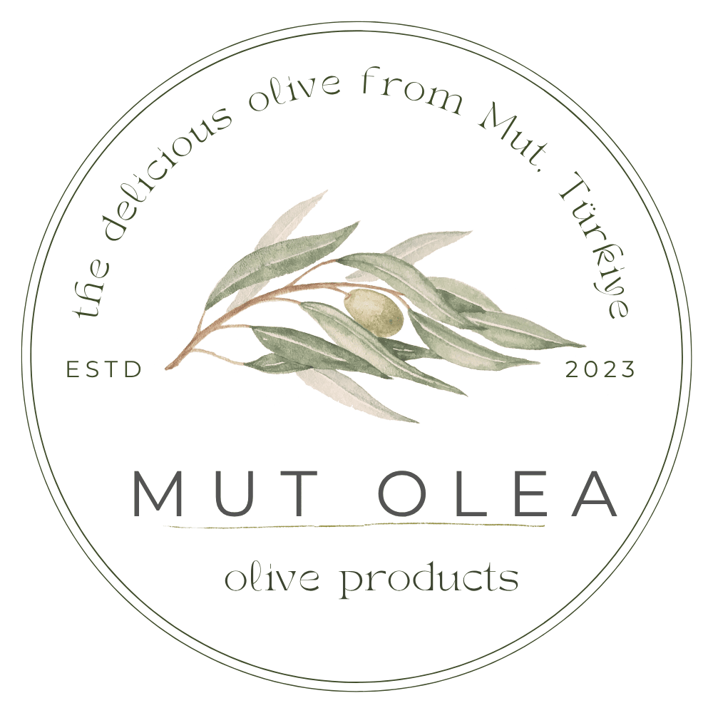
Bölgesel / YerelMutolea
Mut merkezli zeytinyağı ve doğal ürün markası. Soğuk sıkım zeytinyağı ile bitkisel ürün portföyünü birlikte sunar....
Naif Ege Zeytincilik
Naif Ege Zeytincilik, yerel üretim çizgisinde zeytinyağı sunan üretici olarak dizine eklenmiştir....
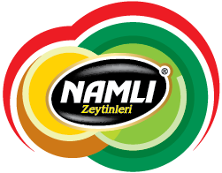
Bölgesel / YerelNamlı Zeytinleri
Namlı Zeytinleri – Kurumsal ve Toptan Satış...
Ninurta
Ninurta, yerel üretim çizgisinde zeytinyağı sunan üretici olarak dizine eklenmiştir....
Nizolive
Güneydoğu kökenli üretici marka. Nizip yağlık başta olmak üzere bölgesel zeytinlerden zeytinyağı üretimi yapar....
Odesa
Odesa, yerel üretim çizgisinde zeytinyağı sunan üretici olarak dizine eklenmiştir....
Oliova
Oliova, yerel üretim çizgisinde zeytinyağı sunan üretici olarak dizine eklenmiştir....
Oliva Troas
Oliva Troas, yerel üretim çizgisinde zeytinyağı sunan üretici olarak dizine eklenmiştir....
Orpir
Orpir, yerel üretim çizgisinde zeytinyağı sunan üretici olarak dizine eklenmiştir....
Osman Menteşe Çiftliği
Milas Ağaçlıhöyük köyündeki Memecik zeytinlerinden butik zeytinyağı üretir. Soğuk sıkım ve sınırlı üretim vurgusu yapar....
Ödemiş Birlik
Ödemiş bölgesi zeytin üreticileri kooperatifi. Memecik çeşidi zeytinlerden kaliteli natürel sızma zeytinyağı üretir....
Öz Köyüm
Öz Köyüm, yerel üretim çizgisinde zeytinyağı sunan üretici olarak dizine eklenmiştir....
Özbey 17
Özbey 17, yerel üretim çizgisinde zeytinyağı sunan üretici olarak dizine eklenmiştir....
Papez
Güney Ege bölgesinden kaliteli zeytinyağı üreten marka. Natürel sızma zeytinyağları ile tanınır....
Polat Zeytinyağı
Ege bölgesinde uzun yıllardır zeytinyağı üreten aile şirketi. Geleneksel yöntemlerle kaliteli natürel sızma zeytinyağı üretir....
Polea Natural
Polea Natural, Mut, Mersin çizgisinde yerel üretim çizgisinde zeytinyağı sunan üretici olarak öne çıkar....
Sabuncugil
Ayvalık kökenli geleneksel üretici marka. Natürel sızma ve bölgesel ürünleriyle bilinir....
SAMANDAĞ KADIN KOOPERATİFİ
SAMANDAĞ KADIN KOOPERATİFİ, Samandağ, Hatay çizgisinde yerel üretim çizgisinde zeytinyağı sunan üretici olarak öne çıkar....
Sarraf Olive Oil
Sarraf Olive Oil – Web...
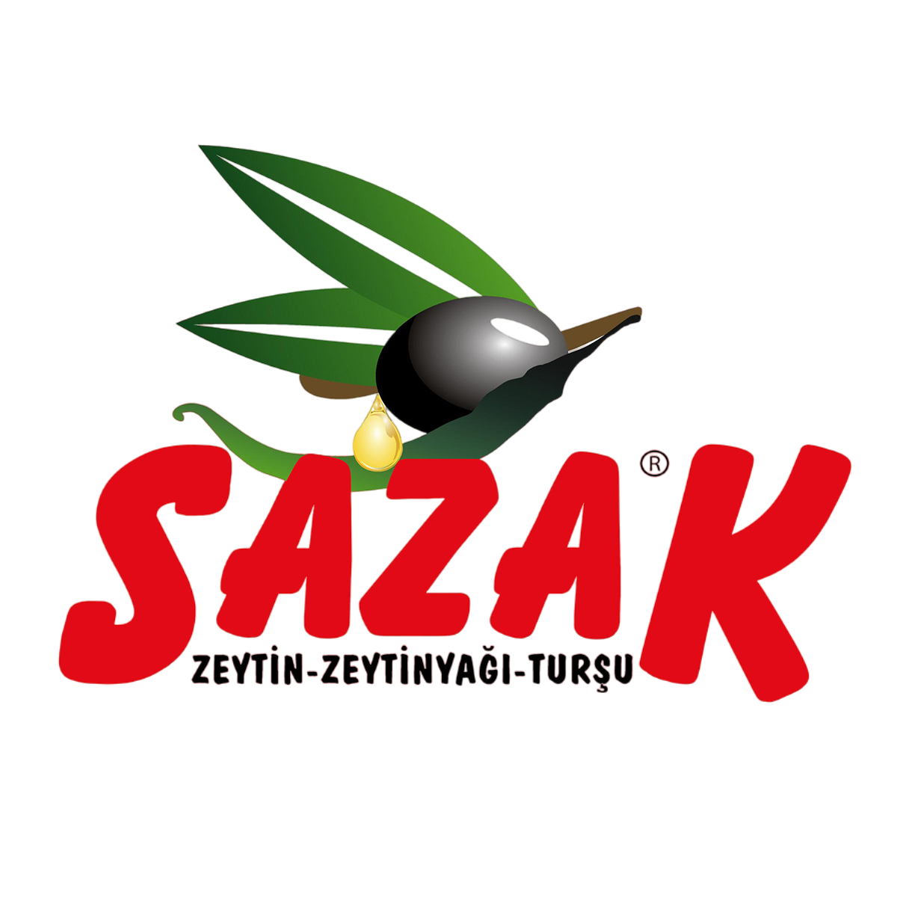
Bölgesel / YerelSazak Zeytincilik
Mut merkezli üretici. Erken hasat, soğuk sıkım ve büyük hacimli teneke ürünlerde güçlü bir ürün gamı sunar....
Selatin
Geleneksel yöntemlerle üretim yapan zeytinyağı markası. Doğal ve katkısız ürünleri ile bilinir....
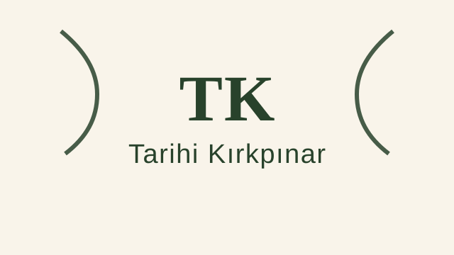
Bölgesel / YerelTarihi Kırkpınar
Trakya bölgesinden zeytinyağı üreten marka. Edirne ve Trakya yöresi zeytinlerinden üretim yapar....
Tavoliva
Tavoliva, yerel üretim çizgisinde zeytinyağı sunan üretici olarak dizine eklenmiştir....
Tenedos
Tenedos, yerel üretim çizgisinde zeytinyağı sunan üretici olarak dizine eklenmiştir....
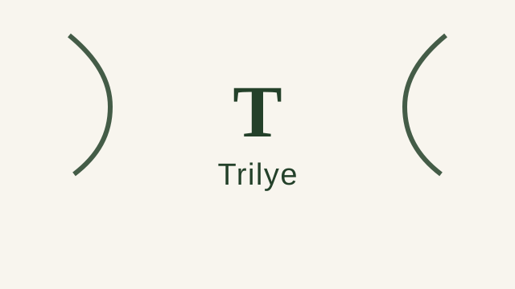
Bölgesel / YerelTrilye
Bursa'nın Mudanya ilçesindeki tarihi Trilye (Tirilye) bölgesinden adını alan zeytinyağı markası. Bölgenin zengin zeytin mirasını yansıtır....
Troas
Troas, yerel üretim çizgisinde zeytinyağı sunan üretici olarak dizine eklenmiştir....
Uğurlu Zeytinyağları
Uğurlu Zeytinyağları, yerel üretim çizgisinde zeytinyağı sunan üretici olarak dizine eklenmiştir....
Varol
Varol ZeytincilikTARİHÇE Varol Zeytincilik olarak, 2014 yılında Anadolu bölgesinde perakende......
Vega 1923
Vega 1923, yerel üretim çizgisinde zeytinyağı sunan üretici olarak dizine eklenmiştir....
Vivendi
Vivendi, yerel üretim çizgisinde zeytinyağı sunan üretici olarak dizine eklenmiştir....
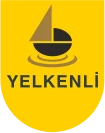
Bölgesel / YerelYelkenli
Mudanya merkezli üretim ve satış yapan marka. Teneke ve cam ambalajlı zeytinyağı ürünleri sunar....
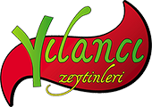
Bölgesel / YerelYILANCI ZEYTİNLERİ
YILANCI ZEYT�NLER� - Gemlik Kat�rl� Zeytinleri Online Sat�� Ma�azas�...
Zarbalı
Zarbalı, yerel üretim çizgisinde zeytinyağı sunan üretici olarak dizine eklenmiştir....
Zelena
Zelena, yerel üretim çizgisinde zeytinyağı sunan üretici olarak dizine eklenmiştir....
Zetay
Edremit Körfezi odaklı üretici. Bölgesel zeytinlerden natürel sızma ve riviera ürünleri sunar....
ZEYDAĞ
Osmaniye’nin Düziçi ilçesinde kurulan Zeydağ, zeytinyağı üretiminin özünü ve geleneksel değerlerini modern teknolojiyle harmanlayarak sizlere sunmaktadır. Kendi üretim ve paketleme...
Zeytin Dalı
Ege bölgesinden natürel sızma zeytinyağı üreten marka. Geleneksel ve modern üretim yöntemlerini birleştirerek kaliteli ürünler sunar....
Zeytin İskelesi
Zeytin İskelesi, yerel üretim çizgisinde zeytinyağı sunan üretici olarak dizine eklenmiştir....
Zeytinci Salih
Armutlu çıkışlı doğal zeytin ve zeytinyağı ürünleri sunan yerel üretici....
Zeytincir
Gaziantep odaklı natürel sızma üretici marka. Saf zeytinyağı ve filtreli-filtresiz ürün diliyle öne çıkar....
Zeytinöz
Armutlu merkezli zeytin ve natürel sızma zeytinyağı ürünleri sunan yerel marka....
Zeytinyağı Evi
Mut zeytinyağı ve sofralık zeytin odaklı satış yapan marka. Filtresiz, domat ve arbequina serileriyle dikkat çeker....
Zeytursan
Marmara bölgesinde zeytinyağı üretimi ve işleme yapan firma. Hem sofralık zeytin hem de zeytinyağı ürünleri sunar....
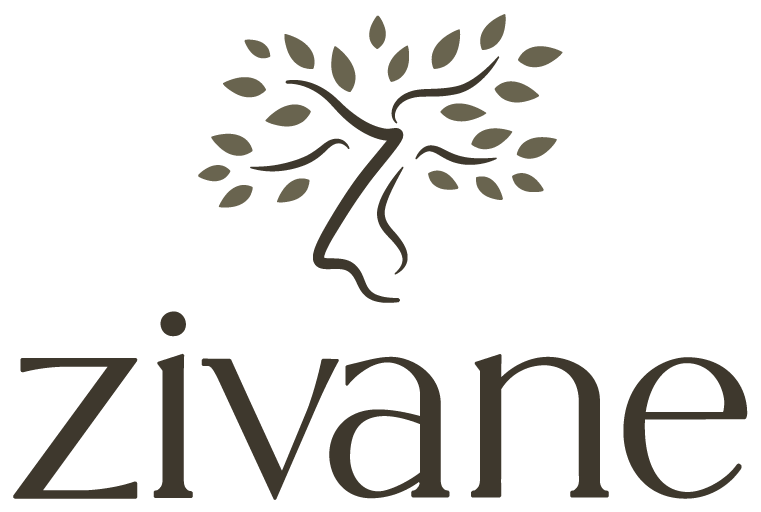
Bölgesel / YerelZivane
Edincik Su çeşidinin yetiştiği Edincik hattında aile zeytinliklerinden sofralık zeytin ve natürel sızma zeytinyağı sunan yerel üretici....